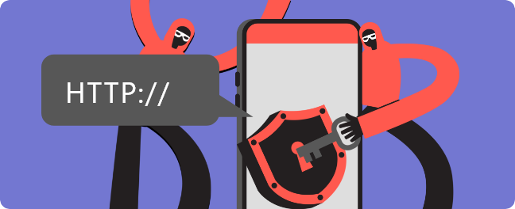

문자메시지로 수신자를 속여 금전적 이득을 노리는 스미싱 범죄가 다시 증가하는 추세다. 과거와 달리 공공기관이나 지인을 사칭하는 문자가 많았다.
31일 한국인터넷진흥원(KISA)에 따르면 지난해 스미싱 문자 탐지 건수는 모두 50만3천300건으로 집계됐다.
지난 2020년 95만843건, 2021년 20만2천276건, 2022년 3만7천122건으로 최근 들어 뚜렷한 감소세를 보이다 다시 큰 폭으로 늘어난 모양새다. 유형별로는 공공기관과 지인을 사칭한 스미싱 문자가 급증하는 것으로 나타났다.
건강검진 진단 결과나 교통 법규 위반 과태료를 안내하는 것처럼 속인 공공기관 사칭 문자는 지난해 35만10건으로 전체 탐지 건수의 69.5%였다. 전체 스미싱에서 공공기관 사칭 문자가 차지하는 비율은 2020년 1.3%, 2021년 8.2%, 2022년 47.8% 등으로 상승세다.
청첩장이나 부고장으로 위장한 지인 사칭 문자도 지난해 5만9천565건으로 11.8%를 차지했다. 2020∼2022년에는 전체 스미싱 중 지인 사칭 문자가 차지하는 비율이 0.1% 안팎에 그쳤다는 점에서 증가세가 가파르다.